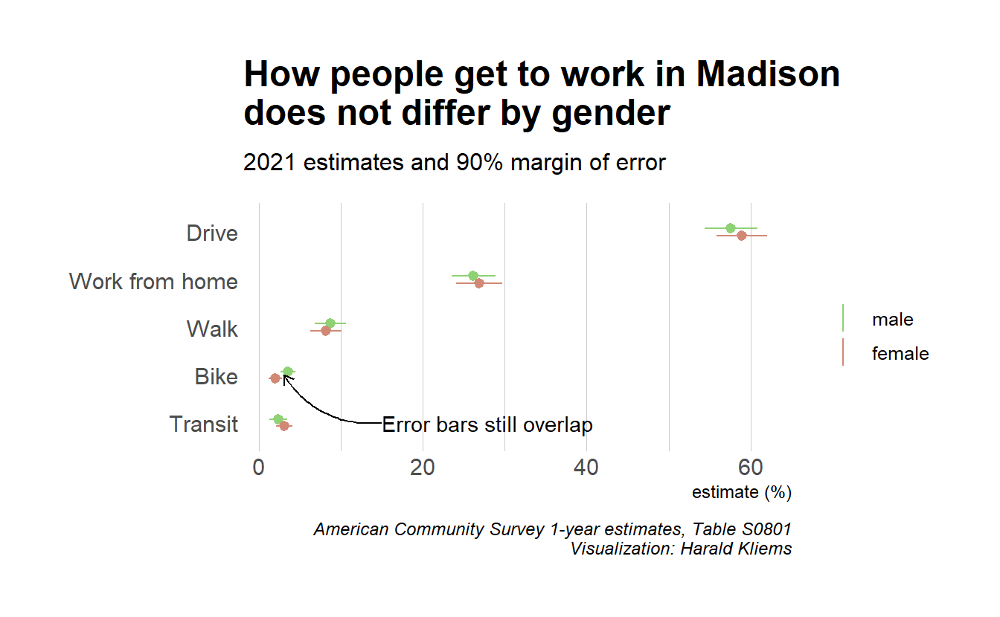

One of the high holidays for census data nerds is ACSmas: The annual release of 1-year estimates from the American Community Survey. Last year’s ACSmas was cancelled because of the pandemic, but this September we finally got our fix of data for 2021.
ACSmas is cancelled this year, everything sucks https://t.co/rGsjpg0WE7
— dadbode miller (@bikepedantic) July 29, 2021
I was especially excited about the commuting data: What did the pandemic do to people’s trips to work? How much of a shift to working from home would we see? And was the data quality actually going to be good enough to draw any firm conclusions? What follows is an in-depth look at the ACS commuting data for the City of Madison.
Mode share over time
ACS mode share data is available all the way back to 2010. In previous posts on the Madison Bikes blog I had already looked at these time series data – and frankly, it was not that exciting: By and large the percentages of different modes of getting to worked stayed the same. Biking didn’t grow but neither shrunk. It seemed highly likely that the pandemic would have changed things up. And it did:
Show code
library(tmap)
library(tidycensus)
library(tidyverse)
library(gt)
# variables <- load_variables(dataset = "acs1/subject", year = "2021")
get_msn_mode_share <- function(year) {
acs_data <- get_acs(year = year, survey = "acs1", table = "S0801", geography = "place", state = 55, cache_table=T)
acs_data |>
filter(NAME == "Madison city, Wisconsin") |>
mutate(year = year)
}
# variable_readable = case_when(
# variable == "S0801_C01_002" ~ "Drive",
# variable == "S0801_C01_009" ~ "Transit",
# variable == "S0801_C01_010" ~ "Walk",
# variable == "S0801_C01_011" ~ "Bike",
# variable == "S0801_C01_013" ~ "Work from home",
# variable == "S0801_C02_002" ~ "Drive, male",
# variable == "S0801_C02_009" ~ "Transit, male",
# variable == "S0801_C02_010" ~ "Walk, male",
# variable == "S0801_C02_011" ~ "Bike, male",
# variable == "S0801_C02_013" ~ "Work from home, male",
# variable == "S0801_C03_002" ~ "Drive, female",
# variable == "S0801_C03_009" ~ "Transit, female",
# variable == "S0801_C03_010" ~ "Walk, female",
# variable == "S0801_C03_011" ~ "Bike, female",
# variable == "S0801_C03_013" ~ "Work from home, female",
#
#
# )
msn_mode_share <- map_dfr(c(2010:2019, 2021), get_msn_mode_share)
msn_mode_share <- msn_mode_share |>
mutate(gender = case_when(str_detect(variable, "^S0801_C01") ~ "total",
str_detect(variable, "^S0801_C02") ~ "male",
str_detect(variable, "^S0801_C03") ~ "female"),
mode_readable = case_when(
str_detect(variable, "S0801_C0[1-3]_002") ~ "Drive",
str_detect(variable, "S0801_C0[1-3]_009") ~ "Transit",
str_detect(variable, "S0801_C0[1-3]_010") ~ "Walk",
str_detect(variable, "S0801_C0[1-3]_011") ~ "Bike",
str_detect(variable, "S0801_C0[1-3]_013") ~ "Work from home"))
# data frame for the ggrepel labels on the right of the plot
msn_mode_share_2021 <- msn_mode_share |>
filter(year == 2021 & !is.na(mode_readable))
msn_mode_share |>
filter(!is.na(mode_readable) & gender == "total") |>
group_by(mode_readable, year) |>
ggplot(aes(year, estimate, color = mode_readable)) +
geom_line(size = 1.2) +
hrbrthemes::scale_color_ipsum(
#name = element_blank()
) +
geom_pointrange(aes(ymin = estimate - moe, ymax = estimate + moe), alpha = .8,
size = 1,fatten = 1) +
hrbrthemes::theme_ipsum() +
scale_x_continuous(breaks = c(2010, 2011, 2012, 2013, 2014, 2015, 2016, 2017, 2018, 2019, 2021), minor_breaks = NULL, limits = c(2010, 2022.5)) +
ylab("estimate (%)") +
labs(title = "Working from home almost quintupled\nbetween 2019 and 2021",
subtitle ="City of Madison commute mode share, 2010-2021",
caption = "American Community Survey 1-year estimates, Table S0801\nVisualization: @HaraldKliems") +
ggrepel::geom_text_repel(data = msn_mode_share_2021 |> filter(gender == "total"), aes(label = paste0(mode_readable, " ", estimate, "%")), nudge_x = 1) +
theme(legend.position = "none")
From 2019 to 2021, the share of people working from home almost quintupled! Fewer people drove to work, and commuting by bus became much less common. For walking and biking the changes were downward too but within the margins of error.
Show code
msn_mode_share |>
filter(!is.na(mode_readable) & gender == "total" & year >= 2019) |>
group_by(mode_readable, year) |>
pivot_wider(names_from = year, values_from = c(estimate, moe)) |>
ggplot() +
geom_segment(aes(x=mode_readable, xend=mode_readable, y=estimate_2019, yend=estimate_2021), color="grey", arrow = arrow(length = unit(2, "mm"))) +
geom_point(aes(x = mode_readable, y = estimate_2019), color = 2019) +
geom_point(aes(x = mode_readable, y = estimate_2021), color = 2021) +
geom_text(aes(x = mode_readable,
y = (estimate_2021 + estimate_2019)/2,
label = paste0(estimate_2021-estimate_2019, "%")),
nudge_x = .25)+
hrbrthemes::scale_color_ipsum(
#name = element_blank()
) +
hrbrthemes::theme_ipsum() +
coord_flip() +
theme(panel.grid.major.y = element_blank()) +
ylab("estimate (%)") +
xlab(element_blank()) +
labs(title = "Change in commute mode share",
subtitle ="City of Madison, 2019-2021. Margins of error not shown",
caption = "American Community Survey 1-year estimates, Table S0801\nVisualization: @HaraldKliems") For transportation planning, it’s important to not only look at percentages but also at absolute numbers: Fewer people driving to work means less peak hour congestion (which is not necessarily a good thing); fewer transit riders means lower fare revenues; and fewer bike commuters may lead to less support of biking infrastructure. And a large number of people working from home may be a problem for commercial real estate or fewer customers for downtown restaurants.
Show code
get_commute_total <- function(year) {
get_acs(geography = "place",
state = "WI",
survey = "acs1",
year = year,
table = "C08006",
summary_var = "C08006_001",
cache_table = T) |>
mutate(year = year,
)
}
commute_numbers <- map_dfr(c(2019, 2021), get_commute_total)
commute_numbers_msn <- commute_numbers |>
filter(NAME == "Madison city, Wisconsin") |>
mutate(mode_readable = case_when(
str_detect(variable, "C08006_001") ~ "Total",
str_detect(variable, "C08006_002") ~ "Drive",
str_detect(variable, "C08006_008") ~ "Transit",
str_detect(variable, "C08006_009") ~ "Bike",
str_detect(variable, "C08006_010") ~ "Walk",
str_detect(variable, "C08006_012") ~ "Work from home")) |>
filter(!is.na(mode_readable))
commute_numbers_msn |>
pivot_wider(id_cols = mode_readable, names_from = year, values_from = c(estimate, moe)) |>
mutate(mode_readable = fct_reorder(mode_readable, estimate_2021)) |>
group_by(mode_readable) |>
mutate(moe_diff = moe_sum(moe = c(moe_2021, moe_2019), estimate = c(estimate_2021, estimate_2019))) |>
ggplot() +
geom_segment(aes(x=mode_readable, xend=mode_readable, y=estimate_2019, yend=estimate_2021), color="grey", arrow = arrow(length = unit(2, "mm"))) +
geom_point(aes(x = mode_readable, y = estimate_2019), color = 2019) +
geom_point(aes(x = mode_readable, y = estimate_2021), color = 2021) +
geom_text(aes(x = mode_readable,
y = (estimate_2021 + estimate_2019)/2,
label = paste0(scales::number_format(style_positive = "plus",big.mark = ",")(estimate_2021-estimate_2019), " (±", round(moe_diff, 0), ")")),
nudge_x = .25)+
hrbrthemes::scale_color_ipsum(
#name = element_blank()
) +
hrbrthemes::theme_ipsum() +
coord_flip() +
theme(panel.grid.major.y = element_blank()) +
ylab("number of workers") +
xlab(element_blank()) +
labs(title = "Change in number of commuters, 2019-2021",
subtitle ="City of Madison. Statistically insignifant changes greyed out",
caption = "American Community Survey 1-year estimates, Table C08006\nVisualization: @HaraldKliems") +
gghighlight::gghighlight(abs(estimate_2021-estimate_2019) > moe_diff, use_direct_label = F)The total number of workers and of bike and walk commuters didn’t change significantly. But there are about 21000 fewer drivers, 11,000 fewer bus commuters, and over 30,000 more people working from home. For a city of Madison’s size, these changes are big!
What about those still going to the office?
When I first shared the above graphs some people pointed out: “Working from home isn’t really commuting! What do these percentages look like when we only account for the people who still leave the house to get to work?” Or to put it differently: Before the pandemic, you and 99 of your coworkers went to the office every day, and 10 of you biked. In 2021, half of your coworkers now work from home. Of the remaining 50 people in the office, do you still have 5 (i.e. 10%) people who bike to work?
Show code
get_msn_mode_counts <- function(year) {
acs_data <- get_acs(year = year, survey = "acs1", table = "C08006", geography = "place", state = 55, cache_table=T, summary_var = "C08006_001")
acs_data |>
filter(NAME == "Madison city, Wisconsin") |>
mutate(year = year)
}
msn_counts <- map_dfr(c(2019, 2021), get_msn_mode_counts)
msn_counts <- msn_counts |>
mutate(summary_est = case_when(year == 2019 ~summary_est - 9050,
year == 2021 ~ summary_est - 40279),
mode_readable = case_when(
variable == "C08006_001" ~ "Total",
variable == "C08006_002" ~ "Drive",
variable == "C08006_003" ~ "Drove alone",
variable == "C08006_004" ~ "Carpooled",
variable == "C08006_008" ~ "Transit",
variable == "C08006_009" ~ "Bike",
variable == "C08006_010" ~ "Walk",
variable == "C08006_011" ~ "Other",
variable == "C08006_012" ~ "Work from home"
),
mode_share = estimate/summary_est) |>
filter(!is.na(mode_readable)) |>
filter(mode_readable %in% c("Drive", "Transit", "Bike", "Walk", "Other")) |>
mutate(mode_readable = fct_relevel(mode_readable,
"Other",
"Bike",
"Walk",
"Transit",
"Drive")) |>
group_by(year,mode_readable) %>%
mutate(pos = cumsum(mode_share) - mode_share/2)
msn_counts |>
ggplot(aes(as.factor(year), mode_share, fill = mode_readable)) +
geom_col(position = "stack") +
geom_text(aes(label = mode_readable), position = position_stack(vjust = 0.5), color = "white",
size = 3) +
scale_y_continuous(labels = scales::label_percent()) +
hrbrthemes::scale_fill_ipsum(name = "element_blank()") +
hrbrthemes::theme_ipsum() +
ylab("Commute mode share estimate") +
xlab(element_blank()) +
theme(legend.position = "none", panel.grid.major.x = element_blank()) +
labs(title = "Transit commutes were the big loser",
subtitle ="City of Madison, working from home excluded",
caption = "American Community Survey 1-year estimates, Table B08006\nVisualization: @HaraldKliems")This is the same data in table form.
Show code
msn_counts |>
pivot_wider(id_cols = mode_readable, names_from = year, values_from = mode_share, names_prefix = "mode_share_") |>
mutate(change = mode_share_2021- mode_share_2019) |>
select(mode_readable, mode_share_2019, mode_share_2021, change) |>
ungroup() |>
gt() |>
tab_header(title = "Change in commute mode for workers not working from home") |>
fmt_percent(columns = c(mode_share_2021, mode_share_2019, change), decimals = 0) |>
tab_spanner(
label = "Mode share",
columns = c(mode_share_2019, mode_share_2021)
) |>
cols_label(mode_readable = "Commute mode",
mode_share_2021 = "2021",
mode_share_2019 = "2019",
change = "Change (percentage points)") |>
data_color(
columns = c(change),
colors = scales::col_numeric(
palette = "viridis",
domain = NULL )) |>
tab_source_note(
source_note = "Data: American Community Survey 1-year estimates, Table B08006. Margins of error not shown."
)| Change in commute mode for workers not working from home | |||
| Commute mode | Mode share | Change (percentage points) | |
|---|---|---|---|
| 2019 | 2021 | ||
| Drive | 74% | 79% | 6% |
| Transit | 10% | 4% | −6% |
| Bike | 4% | 4% | −0% |
| Walk | 11% | 11% | 1% |
| Other | 1% | 2% | 0% |
| Data: American Community Survey 1-year estimates, Table B08006. Margins of error not shown. | |||
Calculating the margins of error for these estimates is complex and I have not done that. But similar to the error bars we have seen above, changes of less than 2% points are probably not meaningful. So what do we take away from the table and chart? Of the people who still commute to the office, taking the bus is much less common while driving has gone up. The other percentages are basically unchanged. This makes sense: Bus service was reduced and many people perceived riding the bus as a risk for infection. Conversely, peak hour congestion for drivers went down (remember: overall the number of people commuting by car went down even when their percentage here went up) and some employers reduced or waived parking fees.
Mode share by gender
Did commuting trends in Madison differ by gender? Especially for biking, research has shown that in the US women are underrepresented in bike commuting, take fewer trips on bike share bikes, and generally have different travel patterns compared to men.(Hosford and Winters 2019; Ravensbergen, Fournier, and El-Geneidy 2022) In the 2021 data for Madison, we do not see these differences.
Looking only at the estimates, it may appear that for bike commuting there is indeed a gender difference: Bike% of men rode their bike to work whereas only Bike% of women did so. But when we look at the error bars around the estimates, we see that for all modes they overlap between the two genders and therefore the differences we see in the data may well be by chance.
Show code
# faceted plot by gender
msn_mode_share |>
filter(!is.na(mode_readable)) |>
group_by(mode_readable, year, gender) |>
ggplot(aes(year, estimate, color = mode_readable)) +
geom_line(size = 1.5) +
hrbrthemes::scale_color_ipsum(name = "element_blank()") +
geom_pointrange(aes(ymin = estimate - moe, ymax = estimate + moe), size = 1.3, fatten = 1.5, alpha = .7) +
hrbrthemes::theme_ipsum() +
scale_x_continuous(breaks = c(2010, 2012, 2014, 2016, 2019, 2021), minor_breaks = NULL, limits = c(2010, 2023)) +
ylab("estimate (%)") +
labs(title = "How people get to work in Madison does not differ by gender",
subtitle ="City of Madison commute mode share, 2010-2021",
caption = "American Community Survey 1-year estimates, Table S0801\nVisualization: @HaraldKliems") +
geom_text(data = msn_mode_share_2021, aes(label = paste0(mode_readable, " ", estimate, "%")), nudge_x = 1) +
theme(legend.position = "none") +
facet_wrap(~ fct_relevel(gender, "total", "female", "male"))Show code
msn_mode_share_2021 |>
filter(gender != "total") |>
ggplot(aes(fct_reorder(mode_readable, estimate), estimate, color = gender)) +
geom_pointrange(aes(ymin = estimate - moe, ymax = estimate + moe),
size = 1.3,
fatten = 1.1,
#alpha = .7,
position = position_dodge(width = 0.3)) +
coord_flip() +
hrbrthemes::scale_color_ipsum(name = element_blank(),
breaks = c("male", "female"),
guide = guide_legend(override.aes = list(shape = NA, size = 5))) +
hrbrthemes::theme_ipsum() +
theme(panel.grid.major.y = element_blank()) +
ylab("estimate (%)") +
xlab(element_blank()) +
labs(title = "How people get to work in Madison\ndoes not differ by gender",
subtitle = "2021 estimates and 90% margin of error",
caption = "American Community Survey 1-year estimates, Table S0801\nVisualization: @HaraldKliems") +
annotate(
geom = "curve", x = "Transit", y = 15, xend = "Bike", yend = 3,
curvature = -.3, arrow = arrow(length = unit(2, "mm"))
) +
annotate(geom = "text", y = 15, x = "Transit", label = "Error bars still overlap", hjust = "left")
Mode share by race and ethnicity
Much has been written about the racial disparities of the COVID epidemic. Infection rates, the outcomes of an infection, and who was and wasn’t able to work from home often followed the patterns of structural racism. The American Community Survey data does provide a breakdown of commute modes by race. However, the more you break down the data into smaller categories, the larger the margins of error get. We saw above that for the total population of Madison or for the mode share by gender, the margins of error were already sizable. If we now break down the data into race and ethnicity categories, this becomes even more problematic. And because Madison is predominantly White, the error margins are largest for non-White population groups. So when you look at the following graph, note the wide error bars and not just the point estimates. Whenever the error bars overlap, the difference between the two groups is likely due to chance.
Show code
get_commute_by_race <- function(table_id) {
get_acs(geography = "place",
state = "WI",
survey = "acs1",
year = 2021,
table = table_id,
summary_var = paste0(table_id, "_001"),
cache_table = T) |>
mutate(table = table_id,
)
}
tables <- c("B08105A",
"B08105B",
"B08105C",
"B08105D",
"B08105E",
"B08105F",
"B08105G",
"B08105H",
"B08105I")
commute_by_race <- map_dfr(tables, get_commute_by_race)
commute_by_race_msn <- commute_by_race |>
filter(NAME == "Madison city, Wisconsin") |>
mutate(race_ethnicity = case_when(str_detect(table, "A$") ~ "White Alone",
str_detect(table, "B$") ~ "Black/African American",
str_detect(table, "C$") ~ "American Indian and Alaska Native Alone",
str_detect(table, "D$") ~ "Asian",
str_detect(table, "E$") ~ "Native Hawaiian Alone",
str_detect(table, "F$") ~ "Other Race Alone",
str_detect(table, "G$") ~ "Two or more races",
str_detect(table, "H$") ~ "Non-Hispanic White",
str_detect(table, "I$") ~ "Hispanic/Latino"),
mode_readable = case_when(
str_detect(variable, "B08105[:alpha:]_001") ~ "Total",
str_detect(variable, "B08105[:alpha:]_002") ~ "Drove alone",
str_detect(variable, "B08105[:alpha:]_003") ~ "Carpooled",
str_detect(variable, "B08105[:alpha:]_004") ~ "Transit",
str_detect(variable, "B08105[:alpha:]_005") ~ "Walked",
str_detect(variable, "B08105[:alpha:]_006") ~ "Cab, motorcycle, bike, other",
str_detect(variable, "B08105[:alpha:]_007") ~ "Work from home")) |>
filter(!is.na(estimate))
p <- commute_by_race_msn |>
mutate(proportion = estimate / summary_est,
prop_moe = moe_prop(estimate, summary_est, moe, summary_moe),
ratio_moe = moe_ratio(estimate, summary_est, moe, summary_moe)) |>
filter(mode_readable != "Total" & race_ethnicity != "Two or more races" & race_ethnicity != "White Alone") |>
ggplot(aes(fct_reorder(mode_readable, proportion), proportion, color = race_ethnicity)) +
geom_pointrange(aes(ymin = proportion - prop_moe, ymax = proportion + prop_moe),
position = position_dodge(width = 0.3)) +
coord_flip() +
scale_y_continuous(labels = scales::percent) +
hrbrthemes::scale_color_ipsum(name = element_blank()) +
hrbrthemes::theme_ipsum() +
theme(panel.grid.major.y = element_blank(),
legend.position = "bottom") +
ylab("mode share estimate and margin of error") +
xlab(element_blank())+
labs(title = "Madison commute mode share by race/ethnicity",
subtitle = "2021 estimates and 90% margin of error",
caption = "American Community Survey 1-year estimates, Tables B08105A-I\nVisualization: @HaraldKliems")
p+
#drive alone
annotate(
geom = "curve", x = 5.4, y = .70, xend = 6.1, yend = .561,
curvature = -.2, arrow = arrow(length = unit(2, "mm")),
) +
annotate(
geom = "curve", x = 5.4, y = .70, xend = 5.95, yend = .575,
curvature = -.7, arrow = arrow(length = unit(2, "mm")),
) +
annotate(geom = "text", y = .705, x = 5.4, label = "Error bars don't overlap", hjust = "left") +
#work from home
annotate(
geom = "curve", x = 5.7, y = .27, xend = 5, yend = .23,
curvature = -.2, arrow = arrow(length = unit(2, "mm"))
) +
annotate(geom = "text", y = .26, x = 5.8, label = "White and Asian commuters are\nmore likely to work from home", hjust = "right") +
#carpool
annotate(
geom = "curve", x = 3.8, y = .23, xend = 3.1, yend = .125,
curvature = .3, arrow = arrow(length = unit(2, "mm"))
) +
annotate(geom = "text", y = .25, x = 3.8, label = "LatinX workers carpool the most\n(but note that wide margin of error)", hjust = "left")Let’s go through mode by mode:
- For driving alone, all the error bars overlap, except for non-Hispanic White compared to Black. Black commuters appear to drive to work at a higher proportion than non-Hispanic White ones.
- For working from home we see a split between non-Hispanic White and Asian on the higher end and Black and Hispanic/Latino on the lower end. Much has been written how some jobs that were deemed essential, such as care or service work as well as many manufacturing jobs, are ones that can’t be done remotely and that are often done by Black or Hispanic workers.
- The share of people walking to work doesn’t differ significantly between any of the groups.
- Carpooling appears to be especially common among Hispanic/LatinX workers. But note the wide error bar again: The only pairing where the bars do not overlap is between Hispanic/LatinX and non-Hispanic White.
- The next category lumps together cabs, motorcycles, bicycles, and other means of transportation to work. Like with walking, there are no significant differences between the groups.
- The same is true for transit: All the error bars overlap, i.e. no significant differences.
There’ more than ACS: Bike count nalysis webinar
The American Community Survey only captures commuting, and trips to work only make up about 20% of all our trips. There are other limitations to the data, e.g. for work trips that involve more than one mode or for people on hybrid work arrangements. Therefore we can only conclude so much from it and should try to include other sources of data about biking in Madison.
One such source are the numerous bike counters that we have on our paths and roads. If you live in Madison, you are probably familiar with the Eco-Counter displays on the Southwest Path at Camp Randall and on the Cap City Trail at North Shore Drive. But there are numerous other counters throughout the city, and we’re in the fortunate position to have help with analyzing the data from these counters: Madison Bikes together with Bike Fitchburg were awarded a data analysis grant from the League of American Bicyclists and Eco-Counter! With the help from the city, we shared loads of counter data with them and the data analysis specialists at Eco Counter will analyze it.
I haven’t see the results yet, but on October 26 you can join a free webinar where we will present results from the analysis and show how they are important for bike advocacy. Sign up here.